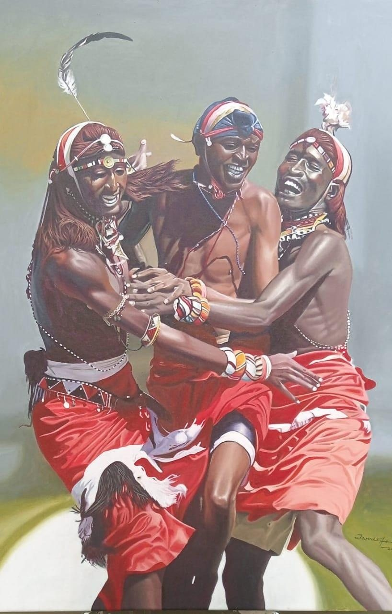
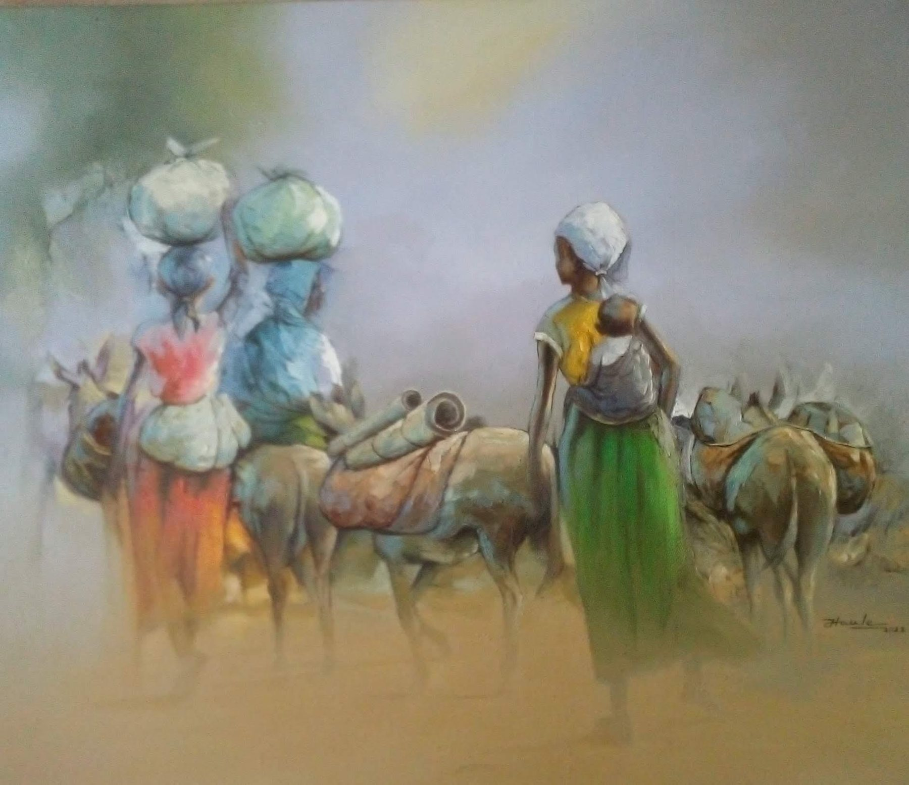
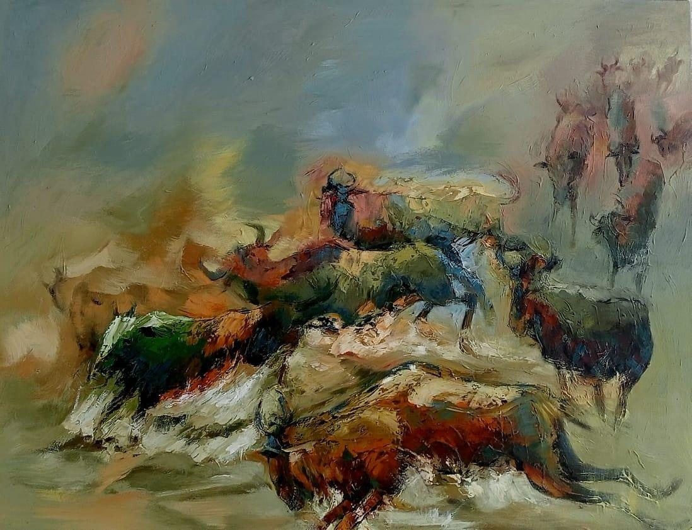
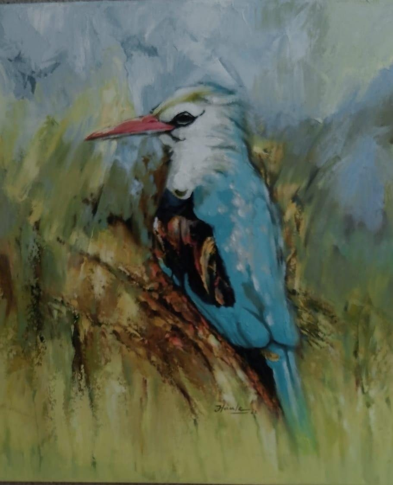

How it began시작Nilivyoanza
I started in primary school, learning from my classmates and from studying pictures.
초등학교 때 친구들에게 배우고 그림들을 보며 시작했습니다.
Nilianza nikiwa shule ya msingi, nikijifunza kupitia wenzangu na kwa kutazama picha.

The land and its life
Painting for 20 years
Dar es Salaam
Palette knife, oil and water-based paint
Realism, impressionism and abstraction
Exhibitions
Has exhibited in Belgium, Germany, the United Kingdom and the Netherlands
Philosophy
James Romanus Haule paints the land and life around him, moving between realism, impressionism and abstraction.
The community around me, a love of natural places, and learning about culture.



In the artist's words작가의 말Kwa maneno ya msanii
Translated from the artist's own answers in Kiswahili, lightly edited for clarity.
작가가 스와힐리어로 직접 쓴 답변을 옮기고 읽기 쉽게 다듬었습니다.
Kwa maneno ya msanii mwenyewe, yamehaririwa kidogo ili yasomeke vizuri.
I started in primary school, learning from my classmates and from studying pictures.
초등학교 때 친구들에게 배우고 그림들을 보며 시작했습니다.
Nilianza nikiwa shule ya msingi, nikijifunza kupitia wenzangu na kwa kutazama picha.
Realism, impressionism and abstraction.
사실주의, 인상주의, 그리고 추상화입니다.
Uhalisia, impressionism na sanaa dhahania (abstract).
The environment we live in, and our lives.
우리가 사는 환경과 우리의 삶 때문입니다.
Mazingira tunayoishi na maisha yetu.
I work from photographs, from the message I want to carry, and from the reality of the subject in front of me.
사진을 참고하고, 전하고 싶은 메시지와 눈앞에 있는 대상의 실제 모습을 바탕으로 작업합니다.
Ninafanya kazi kwa kutumia picha, ujumbe, na uhalisia wa kazi niliyonayo.
The community around me, a love of the natural wonders of our land, and learning about culture.
제 주변의 공동체, 이 땅의 자연 명소에 대한 사랑, 그리고 문화를 배우는 일입니다.
Jamii inayonizunguka, kupenda vivutio vya asili, na kujifunza utamaduni.
The migration of the wildebeest. I was captivated by the moment when they move from one place to another.
누 떼의 대이동입니다. 그들이 한곳에서 다른 곳으로 옮겨 가는 순간에 마음을 빼앗겼습니다.
Uhamaji wa nyumbu. Nilivutiwa na kipindi wanapohama kutoka sehemu moja kwenda nyingine.
To work at home and around the world.
국내는 물론 세계 무대에서 활동하는 것입니다.
Kufanya kazi kitaifa na kimataifa.
Selected works
Record
Voice of Piece
Write to us and we will connect you with the artist. Every sale is made on fair terms, with the artist credited and paid.
Enquire about this work